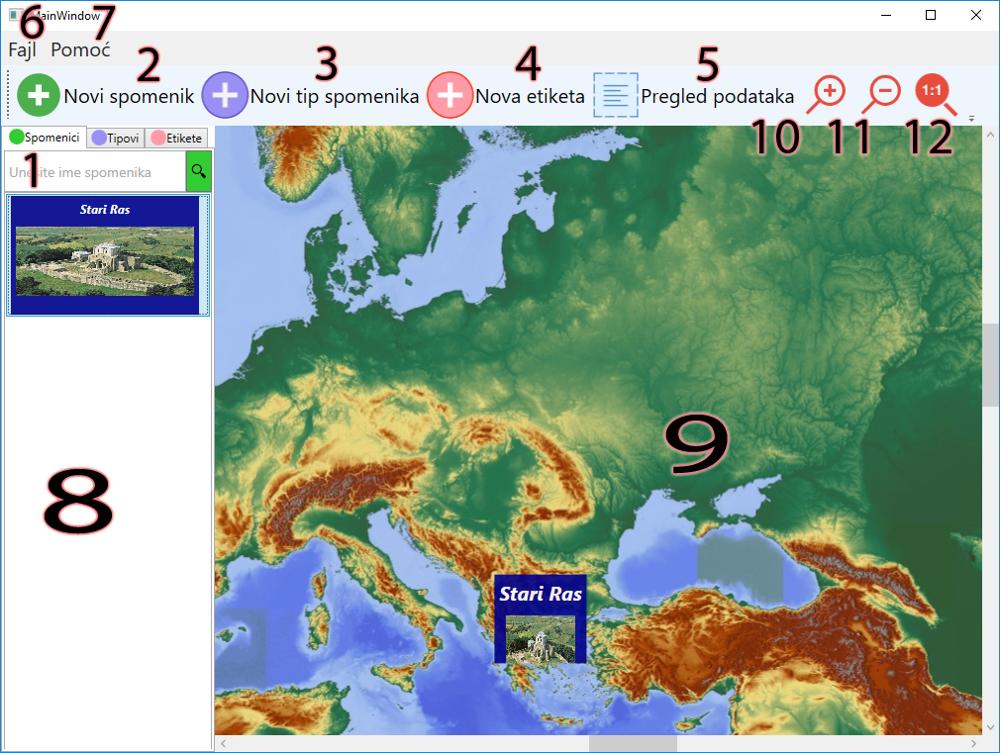

Glavni prozor - pomoć
- Pretraga spomenika po imenu. Krenite da kucate ime i ako ime spomenika počinje na slova koja ste uneli biće prikazan u tabeli ispod (8)
- Dijalog za novi spomenik
- Dijalog za novi tip spomenika
- Dijalog za novu etiketu
- Dijalog sa tabelernim pregledom svih unetih podataka
- Meni (fajl)
- Otvara dijalog za pomoć
- Brzi pregled spomenika, etiketa i tipa spomenika.
- Pregled na mapi. Prevlačenjem spomenika iz brozog pregleda na mapu spomenici ostaju snimljeni na mapi. Spomenici se u mapi mogu pomerati na drugu lokaciju.
- Približi - na klik se zumira mapa. Prečica je okretanje točića miša.
- Odalji - na klik se "zoom out" mapa. Prečica je okretanje točića miša.
- Početna veličina - postavlja zoom mape na početnu vrednost.
